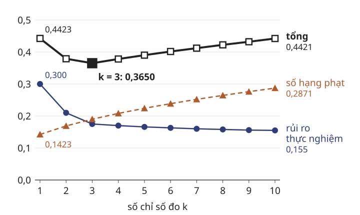
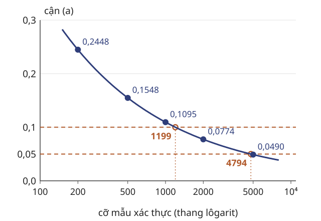

2. Phân tích sai sốCận cho rủi ro có ba phần: do lớp giả thuyết, do cỡ mẫu hữu hạn và do tối ưu không chính xác.
rủi ro tham chiếu · sai số xấp xỉ · sai số ước lượng · sai số tối ưu thực nghiệm
Khi lớp thay đổi, mức tốt nhất của lớp thay đổi theo, nên phép so nhiều lớp cần một mức tham chiếu chung. Rủi ro so với mức đó tách thành phần do lớp và phần do mẫu; phần do mẫu lại gộp sai số thống kê và sai số của bộ giải. Phép so hai lớp trên cận ba thành phần cho thấy vì sao cần chia xác suất thất bại giữa các lớp.
Nguồn: ghi chú Bài 04, §1–§4.
Họ lớp và đầu ra của bộ giải
Họ lớp giả thuyết $\mathcal H_1,\mathcal H_2,\ldots$: hữu hạn hoặc đếm được, chọn trước.
Bộ giải (solver) trên một lớp $\mathcal H$ của họ trả về $\tilde h=\tilde h(S)\in\mathcal H$.
$\tilde h$ có thể khác nghiệm tối thiểu hóa rủi ro thực nghiệm (empirical risk minimization, ERM).
Cố định: $D$, các lớp, $\delta$, $L_D(h)$. Ngẫu nhiên theo $S$: $L_S(h)$, lớp và hàm được chọn.
Lớp thay đổi thì $\inf_{h\in\mathcal H}L_D(h)$ đổi theo: cần một mức tham chiếu chung.
Bài toán giữ tám thành phần của Bài 01 với hai thay đổi: một họ lớp thay cho một lớp, và độ chính xác của bộ giải được tính vào tài nguyên, cùng cỡ mẫu. Bộ giải là thủ tục tối ưu trả về một giả thuyết, không nhất thiết là nghiệm ERM. Dòng cuối là chỗ dễ nhầm: $L_D(h)$ của một $h$ cố định là một số, còn rủi ro kì vọng của hàm được chọn là biến ngẫu nhiên vì hàm đó phụ thuộc $S$.
Nguồn: ghi chú Bài 04, §1 (tám thành phần, bảng nguồn ngẫu nhiên), §2.
Ví dụ: ba bậc đa thức và số chỉ số đo
Ví dụ 04.1. $x_1=-1$, $x_2=0$, $x_3=1$ cố định: thiết kế cố định (fixed design); $Y_i=x_i^2+\zeta_i$, nhiễu độc lập, kì vọng $0$, phương sai $\sigma^2$.
$\hat f^{(j)}$: nghiệm ERM trên $\mathcal P_j$ (đa thức bậc $\le j$), hàm lỗi bình phương (squared loss), $j=0,1,2$.
$\mathcal P_0\subset\mathcal P_1\subset\mathcal P_2$; bậc $2$ nội suy ba điểm: $L_S(\hat f^{(2)})=0$.
Ví dụ. $x\in\mathbb R^{10}$; $\mathcal H_k$ gồm $x\mapsto\mathbb 1[w_1x_1+\cdots+w_kx_k+b\ge0]$, $k=1,\ldots,10$.
$\mathcal H_k\subset\mathcal H_{k+1}$; chiều VC $d_k=k+1$ (Mệnh đề 03.9, phép chiếu); mỗi $\mathcal H_k$ thỏa (M).
Câu hỏi: với $m=10^4$, $\delta=0{,}05,$ dùng bao nhiêu chỉ số đo?
Ví dụ bên trái là bản thu nhỏ của câu hỏi mở đầu: chỉ các nhãn là ngẫu nhiên. Ma trận Vandermonde $3\times3$ của ba hoành độ khả nghịch, nên bậc $2$ nội suy, và rủi ro thực nghiệm chọn bậc $2$ với mọi $\sigma^2$. Ở ví dụ bên phải, các chỉ số đo xếp theo thứ tự cố định trước khi lấy mẫu; đặt $w_{k+1}=0$ cho bao hàm $\mathcal H_k\subset\mathcal H_{k+1}$. Chiều VC $d_k=k+1$ suy từ Mệnh đề 03.9 qua phép chiếu lên $k$ tọa độ đầu, theo kỹ thuật cận dưới và cận trên của Bài 03; (M) thỏa với các tham số hữu tỉ.
Nguồn: ghi chú Bài 04, §3 (Ví dụ 04.1, khối ứng dụng); Phụ lục C.
Rủi ro tham chiếu, sai số xấp xỉ và sai số ước lượng
Định nghĩa 04.1. $\ell$ thỏa (T2), $L_D(h)<\infty$ trên $\mathcal H$. Rủi ro tham chiếu (reference risk): $L^*\le\inf_{h\in\mathcal H}L_D(h)$ chọn trước, không phụ thuộc $S$.
Sai số xấp xỉ (approximation error) $\inf_{h\in\mathcal H}L_D(h)-L^*$; sai số ước lượng (estimation error) $L_D(h)-\inf_{h'\in\mathcal H}L_D(h')$.
Phân tích sai số (error decomposition): $L_D(h)-L^*$ bằng tổng hai sai số.
Ví dụ. Sàng lọc, $D_\eta$ (Ví dụ 01.1, 01.2), $h_t=\mathbb 1[x\ge t]$, $L^*=L^{\mathrm{Bayes}}_{D_\eta}=0{,}18$, $L_{D_\eta}(h_3)=0{,}22$, $L_{D_\eta}(h_2)=0{,}32$: sai số xấp xỉ $0{,}04$, sai số ước lượng của $h_2$ là $0{,}10$.
Ví dụ về rủi ro tham chiếu: rủi ro Bayes, hoặc cận dưới đúng của $L_D$ trên một lớp lớn hơn chứa $\mathcal H$. Sai số xấp xỉ là một số tất định; với cùng $L^*$, nó không tăng khi lớp lớn hơn. Với $h=A(S)$, sai số ước lượng là biến ngẫu nhiên theo $S$, tức rủi ro vượt mức so với lớp. Ở lớp sáu hàm ngưỡng, $0{,}04$ là cái giá của việc giới hạn vào hàm ngưỡng, $0{,}10$ là cái giá của việc chọn $h_2$ thay cho $h_3$; lớp mọi hàm trên năm mức đo chứa hàm phân lớp tối ưu Bayes $\mathbb 1[x\in\{3,5\}]$, nên sai số xấp xỉ của nó bằng $0$. Một số lớn hơn $0{,}22$, chẳng hạn $0{,}25$, không là rủi ro tham chiếu, vì cho sai số xấp xỉ âm.
Nguồn: ghi chú Bài 04, §4, Định nghĩa 04.1 và đoạn sau, Ví dụ 04.2.
Sai số tối ưu thực nghiệm
Sai số ước lượng của $\tilde h$ gộp hai nguồn: cỡ mẫu hữu hạn và bộ giải không tìm đúng nghiệm ERM.
Định nghĩa 04.2. $\ell\ge0$, tập huấn luyện $s$, $\tilde h\in\mathcal H$; sai số tối ưu thực nghiệm (empirical optimization error):
$$\operatorname{opt}_s(\tilde h)=L_s(\tilde h)-\inf_{h\in\mathcal H}L_s(h)\ge0.$$
Nhắc lại: (O1) $\hat h\in\arg\min_{h\in\mathcal H}L_S(h)$; (O2) $L_S(\hat h)\le\inf_{h\in\mathcal H}L_S(h)+\epsilon_{\mathrm{opt}}$, tức $\operatorname{opt}_S(\hat h)\le\epsilon_{\mathrm{opt}}$.
Lưu ý: $L_{D_\eta}(\tilde h)-L_{D_\eta}(\hat h)$ có thể âm: $S=((1,0),(2,1))$, nghiệm ERM duy nhất $\hat h=h_2$, $\tilde h=h_3$: $0{,}22-0{,}32=-0{,}10$, còn $\operatorname{opt}_S(h_3)=\tfrac12$.
Đại lượng $\operatorname{opt}_S(\tilde h)$ tính được từ tập huấn luyện mà không cần biết $D$, và không âm kể cả khi cận dưới đúng không đạt. Ở dòng lưu ý, chỉ $h_2$ phân lớp đúng cả hai quan sát, còn $h_3$ sai trên $(2,1)$; bộ giải trả về $h_3$ lại có rủi ro kì vọng nhỏ hơn. Hiệu theo rủi ro kì vọng còn phụ thuộc nghiệm ERM làm mốc: trên $S_\eta$ của Ví dụ 01.6 có nghiệm ERM với rủi ro $0{,}32$ và nghiệm khác với $0{,}28$. Vì vậy sai số của bộ giải được đo bằng $\operatorname{opt}_S$.
Nguồn: ghi chú Bài 04, §4, Định nghĩa 04.2 và đoạn sau, Nhận xét 04.4.
Cận ba thành phần
Trực quan. Sai số xấp xỉ (lớp) không quan sát được; $2r$ (cỡ mẫu) và $\operatorname{opt}_S(\tilde h)$ (bộ giải) tính được.
Mệnh đề 04.3. Giả thiết: (T2), (T3); $L^*$ như Định nghĩa 04.1; $\tilde h(S)\in\mathcal H$ đo được; $r>0$.
Bảo đảm: (a) $S$ là $r$-đại diện thì
$$L_D(\tilde h)-L^*\le\Big[\inf_{h\in\mathcal H}L_D(h)-L^*\Big]+2r+\operatorname{opt}_S(\tilde h).$$
(b) (T1), (T4), $r=r_m$, hoặc hàm lỗi 0–1, (T1), (T5), (M), $r=\rho_m$; $\delta\in(0,1).$
Mọi $D$, xác suất $\ge1-\delta$ theo $S\sim D^m$: (a) đúng đồng thời cho mọi quy tắc.
Đầu ra $\tilde h$ không cần là nghiệm ERM. Ba số hạng có ba nguồn: sai số xấp xỉ là tất định và không quan sát được; $2r$ phụ thuộc $m$, $\delta$ và kích thước lớp, tính được; $\operatorname{opt}_S(\tilde h)$ tính được trên tập huấn luyện. Phần (a) là khẳng định tất định trên biến cố đại diện; phần (b) cho biến cố đó xác suất cao. Biến cố không phụ thuộc quy tắc, nên cận đúng cùng lúc cho mọi quy tắc trên một tập huấn luyện. Đẳng thức của Định nghĩa 04.1 không tách được sai số ước lượng thành phần thống kê và phần tối ưu; chỉ cận tách được.
Nguồn: ghi chú Bài 04, §4, Mệnh đề 04.3, Nhận xét 04.4.
Ý tưởng chứng minh: cận ba thành phần
Nhắc lại: bước tất định trên biến cố đại diện (Bài 02). Khi $S$ là $r$-đại diện, với mọi $h\in\mathcal H$:
$$\begin{aligned}L_D(\tilde h)&\le L_S(\tilde h)+r=\inf_{h'\in\mathcal H}L_S(h')+\operatorname{opt}_S(\tilde h)+r\\&\le L_S(h)+\operatorname{opt}_S(\tilde h)+r\le L_D(h)+2r+\operatorname{opt}_S(\tilde h)\end{aligned}$$
Dấu $\le$ đầu: đại diện tại $\tilde h$, cần cận đều vì $\tilde h$ chọn theo $S$; dấu $\le$ cuối: tại $h$ cố định.
Lấy $\inf_h$, trừ $L^*$: (a). Giả thiết thống kê chỉ cho xác suất biến cố đại diện: (b).
Kết luận: $L^*=\inf_{\mathcal H}L_D$, $\operatorname{opt}_S\le\epsilon_{\mathrm{opt}}$: rủi ro vượt mức $\le2r+\epsilon_{\mathrm{opt}}$ (Hệ quả 02.16(b), 03.16(b)).
Lộ trình giống Bước 1 của chứng minh Hệ quả 03.16, thêm một số hạng. Đọc chuỗi từ trái sang: bất đẳng thức thứ nhất dùng tính đại diện tại $\tilde h$; đẳng thức là Định nghĩa 04.2; bất đẳng thức thứ hai dùng $\inf_{h'}L_S(h')\le L_S(h)$; bất đẳng thức thứ ba dùng tính đại diện tại $h$. Vế trái không phụ thuộc $h$, nên lấy được cận dưới đúng theo $h$ ở vế phải. Bất đẳng thức then chốt là tính đại diện, dùng hai lần. Ở lần đầu nó phải đúng cho một hàm chọn sau khi xem tập huấn luyện, nên cận cho từng $h$ cố định không đủ; bỏ cận đều thì bất đẳng thức đầu mất cơ sở. Các giả thiết (T1), (T4) hoặc (T1), (T5), (M) không xuất hiện ở phần (a); chúng chỉ cho xác suất của biến cố "$S$ là $r$-đại diện" qua Định lý 02.14(a) hoặc 03.15(a). Khi bộ giải chính xác, số hạng $\operatorname{opt}_S$ bằng $0$.
Nguồn: ghi chú Bài 04, chứng minh Mệnh đề 04.3.
Ví dụ: cận ba thành phần cho hai lớp
$\mathcal H_2$ ($d_2=3$), $\mathcal H_{10}$ ($d_{10}=11$); hàm lỗi 0–1; $m=10^4$, $\delta=0{,}05$; $L^*=L_D^{\mathrm{Bayes}}$.
$\tilde h_k$: bộ giải trên $\mathcal H_k$, (O2) với $\epsilon_{\mathrm{opt}}=0{,}01$; $a_k$: sai số xấp xỉ của $\mathcal H_k$.
Nhắc lại: $\rho_m^2\le\tfrac8m\big(d\ln\tfrac{2em}d+\ln\tfrac4\delta\big)$, $1\le d\le m$ (Định lý 03.15(b)): $\rho_m\le0{,}16444$ ($d=3$), $0{,}27992$ ($d=11$).
$$L_D(\tilde h_2)-L_D^{\mathrm{Bayes}}\le a_2+0{,}3389,\qquad L_D(\tilde h_{10})-L_D^{\mathrm{Bayes}}\le a_{10}+0{,}5699$$
$a_{10}\le a_2$, cả hai không quan sát được; $2\rho_m+\epsilon_{\mathrm{opt}}$ tính được; cận của $\mathcal H_{10}$ nhỏ hơn khi và chỉ khi $a_2-a_{10}>0{,}2310$.
Kết luận: mỗi cận chỉ bảo đảm, xác suất $\ge0{,}95$, cho một lớp chọn trước; chọn lớp theo $S$ cần chia $\delta$.
Một mẫu $\rho_m$-đại diện cũng đại diện với mọi bán kính lớn hơn, nên vế phải của Định lý 03.15(b) dùng được làm $r$. Hai số $0{,}3389$ và $0{,}5699$ là $2\rho_m+0{,}01$ làm tròn lên, với $\rho_m\le0{,}1644303$ và $\rho_m\le0{,}2799194$, cho đầu ra $\tilde h_2$, $\tilde h_{10}$ của bộ giải trên hai lớp. Ngưỡng $0{,}2310$ là hai lần hiệu hai bán kính: mười chỉ số đo chỉ cho cận tốt hơn khi tám chỉ số thêm làm sai số xấp xỉ giảm hơn $0{,}23$, một điều kiện không kiểm tra được từ dữ liệu. Mỗi cận đúng với xác suất ít nhất $0{,}95$ cho một lớp chọn trước; quy tắc chọn lớp theo tập huấn luyện cần hai cận đúng cùng lúc.
Nguồn: ghi chú Bài 04, Ví dụ 04.3.
Bài tập: ba số hạng trên tập huấn luyện sàng lọc
Nhắc lại: $S_\eta$ (Ví dụ 01.5), sáu hàm ngưỡng, hàm lỗi 0–1:
$t$ $1$ $2$ $3$ $4$ $5$ $6$
$L_{S_\eta}(h_t)$ $\tfrac12$ $\tfrac13$ $\tfrac13$ $\tfrac12$ $\tfrac13$ $\tfrac12$ $L_{D_\eta}(h_t)$ $0{,}52$ $0{,}32$ $0{,}22$ $0{,}32$ $0{,}28$ $0{,}48$
Câu hỏi: tính $\operatorname{opt}_{S_\eta}(h_t)$ với $t=1,\ldots,6$. Với $\tilde h=h_4$, $L^*=0{,}18$, $r=0{,}18$, tính ba số hạng của Mệnh đề 04.3(a), vế phải của cận, và so với $L_{D_\eta}(h_4)-L^*$.
Lời giải: $\operatorname{opt}=\tfrac16;\ 0;\ 0;\ \tfrac16;\ 0;\ \tfrac16$; độ lệch lớn nhất $\tfrac12-0{,}32=0{,}18$, nên $S_\eta$ đại diện với bán kính $0{,}18$.
Ba số hạng $0{,}04$; $2r=0{,}36$; $\tfrac16$. Vế phải $\approx0{,}5667$, so với $0{,}32-0{,}18=0{,}14$.
Mẫu $S_\eta=((1,0),(2,0),(2,1),(3,1),(4,0),(5,1))$; rủi ro thực nghiệm nhỏ nhất là $\tfrac13$. Rủi ro tham chiếu $0{,}18$ là rủi ro Bayes của $D_\eta$ (Ví dụ 01.10). Theo §6 của Bài 02, $S_\eta$ là $\epsilon$-đại diện khi và chỉ khi $\epsilon\ge0{,}18$, nên Mệnh đề 04.3(a) áp dụng với $r=0{,}18$. Kiểm tra: $\tfrac13+\tfrac16=\tfrac12=L_{S_\eta}(h_4)$. Cận lớn hơn giá trị thật khoảng $0{,}43$; riêng $2r$ đã là $0{,}36$. Phần (c) của bài cho thấy với $\tilde h=h_5$, một nghiệm ERM, hiệu $L_{D_\eta}(\tilde h)-L_{D_\eta}(\hat h)$ đổi dấu theo nghiệm ERM làm mốc, còn $\operatorname{opt}_{S_\eta}(h_5)=0$.
Nguồn: tệp bài tập, Bài tập 04.1(b), (c); ghi chú Bài 01, Ví dụ 01.5, 01.10.
3. Độ chệch và phương saiLỗi bình phương trên một nhãn mới tách thành phần do thuật toán và phần nhiễu không thuật toán nào giảm được.
hàm hồi quy · dự đoán trung bình · độ chệch · phương sai · nhãn kiểm tra độc lập
Mệnh đề 04.3 cần hàm lỗi trong $[0,1]$, còn ví dụ ba bậc đa thức dùng hàm lỗi bình phương, không bị chặn. Công cụ ở đây là kì vọng theo tập huấn luyện của lỗi bình phương trên một nhãn mới, tại một điểm cố định, cho một thuật toán cố định. Đẳng thức thu được giải thích vì sao bậc cao không luôn tốt hơn, nhưng các thành phần của nó phụ thuộc hàm hồi quy và mức nhiễu chưa biết. Hai khái niệm độ chệch và sai số xấp xỉ dễ lẫn.
Nguồn: ghi chú Bài 04, §5.
Độ chệch và phương sai của một ước lượng tại một điểm
Hàm lỗi bình phương không bị chặn, ngoài (T3) của Mệnh đề 04.3: so các bậc qua lỗi trên nhãn mới.
Định nghĩa 04.5. $x$ cố định; nhãn kiểm tra (test label) $Y$ theo phân bố nhãn tại $X=x$, $\mathbb EY^2<\infty$; $\hat f_S(x)$ tính từ $S$, $\mathbb E_S\hat f_S(x)^2<\infty$.
Hàm hồi quy (regression function) $f^*(x)=\mathbb E[Y\mid X=x]$; phương sai nhiễu (noise variance) $\sigma^2(x)=\operatorname{Var}(Y\mid X=x)$.
Dự đoán trung bình (average prediction) $\bar f(x)=\mathbb E_S\hat f_S(x)$; độ chệch (bias) $\bar f(x)-f^*(x)$.
Phương sai (variance) $\operatorname{Var}_S(\hat f_S(x))=\mathbb E_S\big(\hat f_S(x)-\bar f(x)\big)^2$.
Kì vọng trong $\bar f(x)$ và $\operatorname{Var}_S$ lấy theo tập huấn luyện, với $x$ cố định; $\sigma^2(x)$ là phương sai của một nhãn mới tại $x$. Phương sai là tính chất của thuật toán cùng phân bố của tập huấn luyện. Trong thiết kế cố định của ví dụ ba bậc đa thức, $f^*(x)=x^2$ và $\sigma^2(x)=\sigma^2$. Cần phân biệt "độ chệch" với "độ lệch" của Bài 02–03: độ lệch là $\lvert L_S(h)-L_D(h)\rvert$, còn độ chệch là hiệu giữa dự đoán trung bình và hàm hồi quy.
Nguồn: ghi chú Bài 04, §5, Định nghĩa 04.5 và hai đoạn sau.
Phân tích độ chệch–phương sai tại một điểm
Trực quan. Ba nguồn: $\hat f_S(x)$ dao động quanh $\bar f(x)$; $\bar f(x)$ lệch $f^*(x)$; $Y$ có nhiễu.
Mệnh đề 04.6 (bias–variance decomposition). Giả thiết: $x$ cố định; $\hat f_S(x)$ như Định nghĩa 04.5, $S$ bất kì;
$Y$ có $\mathbb EY=f^*(x)$, $\operatorname{Var}(Y)=\sigma^2(x)<\infty$, độc lập với $S$. Bảo đảm: lỗi kiểm tra kì vọng (expected test error) theo $(S,Y)$:
$$\mathbb E_{S,Y}\big(\hat f_S(x)-Y\big)^2=\big(\bar f(x)-f^*(x)\big)^2+\operatorname{Var}_S\big(\hat f_S(x)\big)+\sigma^2(x).$$
Một thuật toán, một điểm; đúng cả khi hàm lỗi không bị chặn. Hàm $f$ cố định: lỗi $\ge\sigma^2(x)$.
Đẳng thức là cho một thuật toán tại một điểm. Tập huấn luyện không cần độc lập cùng phân bố; cỡ mẫu $m$ đi vào qua phân bố của $\hat f_S(x)$. Hai số hạng đầu là đại lượng của thuật toán, số hạng cuối là phần nhiễu mà không thuật toán nào giảm được. Với hàm cố định, dấu bằng ở dòng cuối xảy ra khi $f(x)=f^*(x)$. Với thiết kế ngẫu nhiên (random design), lấy thêm kì vọng theo đầu vào $X$ cho $\mathbb E_S[L_D(\hat f_S)]$; khi đó $\mathbb E\,\sigma^2(X)$ là rủi ro Bayes của hàm lỗi bình phương, đạt tại $f^*$.
Nguồn: ghi chú Bài 04, §5, Mệnh đề 04.6 và hai đoạn sau; tệp bài tập, Bài tập 04.2(a).
Ý tưởng chứng minh: phân tích độ chệch–phương sai
Viết tắt $\hat f=\hat f_S(x)$, $\bar f=\bar f(x)$, $f^*=f^*(x)$; tách $\hat f-Y=(\hat f-\bar f)+(\bar f-f^*)+(f^*-Y)$.
Ba bình phương: phương sai, độ chệch bình phương, $\sigma^2(x)$; mọi tích khả tích (Cauchy–Schwarz).
Hai số hạng chéo chứa hằng $\bar f-f^*$ có kì vọng $0$, vì $\mathbb E\hat f=\bar f$ và $\mathbb EY=f^*$.
$2\,\mathbb E[(\hat f-\bar f)(f^*-Y)]=0$ chỉ nhờ $Y$ độc lập với $S$; thiếu độc lập, nó bằng $-2\operatorname{Cov}(\hat f,Y)$.
Kỹ thuật. Thêm bớt kì vọng rồi bình phương; mỗi số hạng chéo có một lý do riêng để bằng $0$.
Bình phương vế phải ở bước 1 cho ba bình phương và ba số hạng chéo, mỗi số hạng chéo có hệ số $2$. Vì $\mathbb E\hat f^2<\infty$ và $\mathbb EY^2<\infty$, ba số hạng có mô-men bậc hai hữu hạn, nên theo Cauchy–Schwarz mọi tích của chúng khả tích. Ở bước 4, tính độc lập cho $\mathbb E[(\hat f-\bar f)(f^*-Y)]=\mathbb E[\hat f-\bar f]\,\mathbb E[f^*-Y]=0$; đây là chỗ duy nhất dùng giả thiết nhãn kiểm tra độc lập. Khi nhãn kiểm tra nằm trong tập huấn luyện, số hạng chéo bằng $-2\operatorname{Cov}(\hat f,Y)$. Ở Ví dụ 04.5, $\hat f=\bar Y$ và nhãn kiểm tra $Y_1$ có $\operatorname{Cov}(\bar Y,Y_1)=\sigma^2/m>0$, nên số hạng chéo bằng $-2\sigma^2/m$ và lỗi đo được nhỏ hơn lỗi trên nhãn mới. Câu ôn nhanh 3 là trường hợp không có $S$: $\mathbb E(U-c)^2=\operatorname{Var}(U)+(\mathbb EU-c)^2$.
Nguồn: ghi chú Bài 04, chứng minh Mệnh đề 04.6; Câu hỏi ôn nhanh 3.
Ví dụ: độ chệch và phương sai của ba bậc đa thức
Ví dụ 04.1, $x_0=0{,}5$, $f^*(x_0)=0{,}25$; $Y=0{,}25+\zeta_0$, $\zeta_0$ độc lập với $S$, $\operatorname{Var}\zeta_0=\sigma^2$.
$\hat f^{(j)}(x_0)=\sum_iw_iY_i$; $\mathbb EY_i=x_i^2$ nên $\bar f(x_0)=w_1+w_3$; phương sai $\sigma^2\sum_iw_i^2$.
$j$ $(w_1,w_2,w_3)$ $\bar f(x_0)$ (độ chệch)$^2$ phương sai tổng, $\sigma^2{=}1$ tổng, $\sigma^2{=}0{,}1$
$0$ $(\tfrac13,\tfrac13,\tfrac13)$ $\tfrac23$ $0{,}1736$ $0{,}3333\,\sigma^2$ $\mathbf{0{,}5069}$ $0{,}2069$ $1$ $(\tfrac1{12},\tfrac13,\tfrac7{12})$ $\tfrac23$ $0{,}1736$ $0{,}4583\,\sigma^2$ $0{,}6319$ $0{,}2194$ $2$ $(-\tfrac18,\tfrac34,\tfrac38)$ $\tfrac14$ $0$ $0{,}71875\,\sigma^2$ $0{,}7188$ $\mathbf{0{,}0719}$
Kết luận: bậc tốt nhất là $0$ ($\sigma^2=1$) hoặc $2$ ($\sigma^2=0{,}1$).
$\sigma^2$, $f^*$ chưa biết, nên phân tích này không cho quy tắc chọn bậc từ dữ liệu.
Cột tổng là độ chệch bình phương cộng phương sai; lỗi kiểm tra kì vọng cộng thêm $\sigma^2$, giống nhau cho cả ba bậc. Bậc $0$ cho $\bar Y$. Bậc $1$ giải hệ phương trình chuẩn (normal equations); vì $\sum_ix_i=0$, $\sum_ix_i^2=2$, dự đoán là $\bar Y+\tfrac14(Y_3-Y_1)$. Bậc $2$ là đa thức nội suy Lagrange, với ba đa thức cơ sở tại $x_0$ bằng $-\tfrac18$, $\tfrac34$, $\tfrac38$. Vì $\mathbb EY_i=x_i^2$ và $(x_1^2,x_2^2,x_3^2)=(1,0,1)$, dự đoán trung bình là $w_1+w_3$. Bậc $2$ không chệch vì $x^2\in\mathcal P_2$, nhưng có phương sai lớn nhất. Khi nhiễu chia cho $10$, phương sai chia cho $10$ còn độ chệch giữ nguyên, nên thứ tự đảo lại. Bậc tốt nhất phụ thuộc $\sigma^2$ và $f^*$, hai đại lượng chưa biết.
Nguồn: ghi chú Bài 04, Ví dụ 04.4; Phụ lục C.
Ví dụ: nhãn kiểm tra nằm trong tập huấn luyện
Không có đầu vào; $Y_1,\ldots,Y_m$ độc lập cùng phân bố, $\mathbb EY_i=\mu$, $\operatorname{Var}Y_i=\sigma^2$; $\hat f=\bar Y$; $m=4$, $\sigma^2=1$.
Nhãn kiểm tra $Y_1$ nằm trong tập huấn luyện: bỏ giả thiết độc lập.
Áp dụng sai Mệnh đề 04.6 (độ chệch, phương sai, nhiễu): $0+\sigma^2/m+\sigma^2=1{,}25.$
$$\mathbb E(\bar Y-Y_1)^2=\sigma^2\Big[\big(\tfrac{m-1}m\big)^2+\tfrac{m-1}{m^2}\Big]=\sigma^2\,\tfrac{m-1}m=0{,}75$$
Hiệu $1{,}25-0{,}75=0{,}5$ đến từ số hạng chéo $-2\operatorname{Cov}(\bar Y,Y_1)=-2\sigma^2/m$.
Kết luận: với $\hat f=\bar Y$, lỗi trên nhãn đã dùng để huấn luyện thấp hơn lỗi trên nhãn mới $2\sigma^2/m$.
Công thức đúng đến từ $\bar Y-Y_1=-\tfrac{m-1}m(Y_1-\mu)+\tfrac1m\sum_{i\ge2}(Y_i-\mu)$: các số hạng độc lập, kì vọng $0$, nên kì vọng của bình phương là tổng các phương sai. Số hạng chéo ở bước 4 của chứng minh bằng $2\,\mathbb E[(\bar Y-\mu)(\mu-Y_1)]=-2\operatorname{Cov}(\bar Y,Y_1)$, và $\operatorname{Cov}(\bar Y,Y_1)=\sigma^2/m$ vì chỉ $Y_1$ trong trung bình tương quan với chính nó. Tóm lại, không đo chất lượng của hàm dự đoán trên chính các nhãn đã dùng để chọn nó.
Nguồn: ghi chú Bài 04, Ví dụ 04.5.
Độ chệch và sai số xấp xỉ
Nhận xét 04.7. Độ chệch thuộc thuật toán, sai số xấp xỉ thuộc lớp.
Hàm lỗi bình phương, không đầu vào; $Y=\pm1$ với xác suất $\tfrac12$: $f^*=0$, $\sigma^2=1$.
Lớp hai hàm hằng $\pm1$, $m$ lẻ: nghiệm ERM $\operatorname{sign}(\bar Y)$, $\bar f=0=f^*$: độ chệch $0$, phương sai $1.$
$L^*=\sigma^2=1$; $\mathbb E(c-Y)^2=2$ với $c=\pm1$: sai số xấp xỉ $1$.
Lưu ý: nhãn $\{0,1\}$, $\Pr(Y=1\mid X=x)=0{,}9$: thuật toán dao động nhiều hơn có lỗi $0{,}58$, thuật toán hằng $0$ có lỗi $0{,}90$ (Ví dụ 04.6).
Với $c=\pm1$, $(c-Y_i)^2$ bằng $0$ khi $Y_i=c$ và $4$ khi $Y_i\ne c$, nên nghiệm ERM là dấu chiếm đa số; $m$ lẻ nên không có trường hợp bằng nhau, và do đối xứng mỗi dấu có xác suất $\tfrac12$. Rủi ro tham chiếu $\sigma^2=1$ là rủi ro Bayes của hàm lỗi bình phương. Ở dòng lưu ý, thuật toán thứ nhất dự đoán $1$ với xác suất $0{,}4$: lỗi $0{,}25+0{,}24+0{,}09=0{,}58$; thuật toán luôn dự đoán $0$: $0{,}81+0+0{,}09=0{,}90$. Cả hai có dự đoán đa số $0$, sai so với hàm phân lớp tối ưu Bayes, và thuật toán dao động nhiều hơn có lỗi nhỏ hơn. Với hàm phân lớp, đẳng thức đúng về số nhưng không cho đánh đổi độ chệch–phương sai (bias–variance tradeoff).
Nguồn: ghi chú Bài 04, Nhận xét 04.7, Ví dụ 04.6.
Bài tập: độ chệch của ước lượng co và sai số xấp xỉ
$Y_1,\ldots,Y_m$, $Y$ độc lập cùng phân bố, $\mathbb EY=\mu$, $\operatorname{Var}Y=\sigma^2$; ước lượng co (shrinkage estimator) $\gamma\bar Y$, $\gamma\in[0,1]$; $m=4$, $\mu=1$, $\sigma^2=1$.
Câu hỏi: xét lớp các hàm hằng và $L^*=\sigma^2$. Tính sai số xấp xỉ của lớp và độ chệch của $\gamma\bar Y$ tại $\gamma=0{,}8$, và giải thích vì sao hai số khác nhau.
Lời giải: $\mathbb E(c-Y)^2=(c-\mu)^2+\sigma^2$ nhỏ nhất tại $c=\mu$, thuộc lớp: sai số xấp xỉ $0.$
$\mathbb E[0{,}8\bar Y]=0{,}8\mu$: độ chệch $(0{,}8-1)\mu=-0{,}2$; lớp chứa $\mu$, còn thuật toán chệch về $0$.
Nhận xét 04.7 và bài này cho hai chiều ngược nhau: độ chệch $0$ với sai số xấp xỉ $1$, và sai số xấp xỉ $0$ với độ chệch $-0{,}2$. Phần (b) của bài: lỗi kiểm tra kì vọng $(1-\gamma)^2\mu^2+\gamma^2\sigma^2/m+\sigma^2$ bằng $1{,}25$; $1{,}20$; $1{,}3125$; $2{,}00$ tại $\gamma=1;\ 0{,}8;\ 0{,}5;\ 0$, và $\gamma^*=\mu^2/(\mu^2+\sigma^2/m)=0{,}8$ phụ thuộc $\mu$, $\sigma^2$ chưa biết. Phần (c): đo lỗi trên nhãn đã dùng để huấn luyện thì chọn $\gamma=1$.
Nguồn: tệp bài tập, Bài tập 04.2(b)–(d).
4. Chia xác suất thất bại và tối thiểu hóa rủi ro cấu trúcKhi cận đúng đồng thời cho mọi lớp, chọn lớp theo tập huấn luyện vẫn giữ được bảo đảm cho rủi ro.
bán kính hội tụ đều · trọng số · số hạng phạt · bất đẳng thức oracle · dung sai
Phần phân tích sai số cho mỗi lớp chọn trước một cận đúng với xác suất $0{,}95$, và phép so hai cận cần một hiệu sai số xấp xỉ không biết được. Chia xác suất thất bại theo trọng số cho các cận đúng đồng thời trên cả họ lớp. Trên biến cố chung đó, rủi ro thực nghiệm cộng số hạng phạt là cận trên của rủi ro kì vọng, và quy tắc tối thiểu hóa tổng này có một bất đẳng thức oracle. Câu hỏi chọn số chỉ số đo nhận câu trả lời bằng số.
Nguồn: ghi chú Bài 04, §6.
Bán kính hội tụ đều của một lớp
Chọn lớp theo $S$ cần cận đúng đồng thời cho mọi lớp.
Định nghĩa 04.8. (T2), (T3). $\mathrm{rad}_{\mathcal H}(m,\delta')$ chọn trước, không phụ thuộc $S$, $h$, $D$, là bán kính hội tụ đều (uniform convergence radius) nếu
$$\Pr_{S\sim D^m}\Big[\sup_{h\in\mathcal H}\lvert L_S(h)-L_D(h)\rvert\le\mathrm{rad}_{\mathcal H}(m,\delta')\Big]\ge1-\delta'$$
với mọi $D$, $m\ge1$, $\delta'\in(0,1)$, và biến cố trong ngoặc đo được.
Ví dụ. $r_m$ khi (T4); $\rho_m$ tại $\delta'$ khi hàm lỗi 0–1, (T5), (M). Dạng chiều VC (VC-dimension form):
$$\mathrm{rad}(m,\delta')^2=\tfrac8m\Big(d\ln\tfrac{2em}d+\ln\tfrac4{\delta'}\Big)\ \ (m\ge d\ge1);\qquad\mathrm{rad}=1\ \ (m<d).$$
Lý do giống Định lý 02.14: ở đó giả thuyết được chọn theo mẫu nên cần cận đồng thời cho mọi giả thuyết; ở đây lớp được chọn theo mẫu nên cần cận đồng thời cho mọi lớp. Hai ví dụ là bán kính của Định lý 02.14(a) và 03.15(a), tính tại $\delta'$. Một hàm lớn hơn một bán kính cũng là bán kính, và độ lệch đều không vượt quá $1$; vì vậy vế phải của Định lý 03.15(b), cắt ở $1$ khi $m<d$, cũng là bán kính. Lớp $\mathcal M_{[0,1]}$ của Ví dụ 03.6 có độ lệch đều bằng $1$ trên mọi tập huấn luyện dưới phân bố của ví dụ đó, nên mọi bán kính của nó không nhỏ hơn $1$ và không cho thông tin.
Nguồn: ghi chú Bài 04, §6, Định nghĩa 04.8 và ba đoạn sau.
Kiểm soát đồng thời trên một họ lớp
Họ lớp cố định trước khi lấy mẫu (T6): các lớp $\mathcal H_k$, bán kính $\mathrm{rad}_k=\mathrm{rad}_{\mathcal H_k}$, trọng số $q_k>0$, $\sum_kq_k\le1$ chọn trước, không phụ thuộc $S$.
Trực quan. Chia xác suất thất bại (confidence allocation): lớp $k$ nhận phần $\delta q_k$; với $q_k=2^{-k}$, $\delta=0{,}05$, các phần $0{,}025;\ 0{,}0125;\ \ldots$ cộng lại $0{,}05$.
Bổ đề 04.9. Giả thiết: (T1), $m\ge1$; (T2), (T3); (T6); $\delta\in(0,1)$.
Bảo đảm: số hạng phạt (penalty) $\mathrm{pen}_k=\mathrm{rad}_k(m,\delta q_k)$; với xác suất $\ge1-\delta$, đồng thời mọi $k$, mọi $h\in\mathcal H_k$:
$$\lvert L_S(h)-L_D(h)\rvert\le\mathrm{pen}_k.$$
Giả thiết (T5) của Bài 03 là (T6) với một lớp và $q_1=1$. Bảo đảm là với xác suất cao theo $S$, cho cả họ lớp cùng lúc, giữa đại lượng thực nghiệm và tổng thể. Nó phụ thuộc $m$ qua $\mathrm{rad}_k$, còn $\delta$ và $q_k$ vào qua tích $\delta q_k$. Với hai bán kính của Bài 02–03, tích này vào dưới dạng $\ln(1/\delta)+\ln(1/q_k)$ trong căn. Lớp có trọng số nhỏ nhận bán kính lớn hơn; trọng số giảm theo chỉ số nghĩa là các lớp đầu danh sách được ưu tiên.
Nguồn: ghi chú Bài 04, §2 (T6), §6, Bổ đề 04.9; Câu hỏi ôn nhanh 2.
Ý tưởng chứng minh: kiểm soát đồng thời
Biến cố hỏng $B_k=\{\sup_{h\in\mathcal H_k}\lvert L_S(h)-L_D(h)\rvert>\mathrm{pen}_k\}$, đo được theo Định nghĩa 04.8.
$\delta q_k\in(0,1)$; $\mathrm{rad}_k$, $q_k$ không phụ thuộc $S$ (T6), nên $\Pr(B_k)\le\delta q_k$; (T1), (T3) vào qua bán kính.
Dạng đếm được của bất đẳng thức hợp; $\sum_kq_k\le1$ dùng ở bất đẳng thức thứ hai:
$$\Pr\Big(\bigcup_kB_k\Big)\le\sum_k\delta q_k\le\delta.$$
Nhắc lại: chia $\delta/K$ cho từng giả thuyết (Bài 02) là trường hợp $q_k=1/K$.
Bỏ "chọn trước": một lớp dựng sau khi xem $S$ làm bước 2 hỏng.
Lộ trình là bất đẳng thức hợp trên các lớp, như Định lý 02.14 dùng nó trên các giả thuyết. Biến cố của bổ đề là phần bù của $\bigcup_kB_k$. Ở bước 2, $0<q_k\le\sum_jq_j\le1$ nên $\delta q_k$ nằm trong miền của bán kính; vì $\mathrm{rad}_k$ và $q_k$ cố định trước khi lấy mẫu, Định nghĩa 04.8 áp dụng với $\delta'=\delta q_k$. Tính đồng thời trên các lớp chỉ đòi thay $\delta$ bằng $\delta q_k$ trong bán kính của lớp $k$. Khi một lớp phụ thuộc $S$, bán kính của nó không còn chặn xác suất của biến cố hỏng; khi tổng trọng số vượt $1$, bất đẳng thức thứ hai hỏng. Câu ôn nhanh 2 là bước 3 với $q_k=2^{-k}$.
Nguồn: ghi chú Bài 04, chứng minh Bổ đề 04.9; Câu hỏi ôn nhanh 2.
Chia xác suất thất bại theo trọng số
Kỹ thuật. Cận cho thành phần $k$ của một danh sách đếm được đúng với xác suất $\ge1-\delta q_k$, $q_k>0$, $\sum_kq_k\le1$ chọn trước.
Bất đẳng thức hợp: mọi $k$ đồng thời, xác suất $\ge1-\delta$.
Dùng khi lớp hoặc giả thuyết được chọn theo dữ liệu.
Ví dụ. Ứng dụng, $m=10^4$, $\delta=0{,}05$, dạng chiều VC, $q_k=6/(\pi^2k^2)$, $\ln(1/q_k)=2\ln k+\ln(\pi^2/6)$.
$k=3$: $\mathrm{pen}_3\approx0{,}1900$, so với $0{,}1843$ khi không chia; trên $k\le10$, mức tăng nằm giữa $1\%$ ($k=1$) và $3{,}2\%$ ($k=4$).
Giá phải trả là bán kính của thành phần $k$ tính tại $\delta q_k$ thay cho $\delta$. Với dạng chiều VC, $d_3=4$: $\ln(4/(0{,}05\,q_3))\approx4{,}382+2{,}695=7{,}077$, $8(38{,}069+7{,}077)/10^4\approx0{,}036117$, căn bằng $0{,}1900$. Với $k=2$, bán kính tăng từ $0{,}1644$ lên $0{,}1690$; với $k=10$, từ $0{,}2799$ lên $0{,}2871$. Phép chia chỉ cộng $\ln(1/q_k)$ vào trong căn, nhỏ so với $d_k\ln(2em/d_k)$. Trường hợp $q_k=1/K$ trên $K$ giả thuyết là phép chia $\delta/K$ của Bài 02. Kỹ thuật này dùng lại khi cho xác suất thất bại giảm theo cỡ mẫu, và ở Bài 07.
Nguồn: ghi chú Bài 04, Bổ đề 04.9, Ví dụ 04.7; Phụ lục C.
Ví dụ: xác suất thất bại không được chia
$\mathcal X=\{0,1\}^{k_{\max}}$, tọa độ độc lập $\mathrm{Bernoulli}(\tfrac12)$, $Y=0$; $\mathcal H_k=\{h_k\}$, $h_k(x)=x_k;$ hàm lỗi 0–1; $m=10$, $\delta=0{,}05$.
Mọi $q_k=1$: $\sum_kq_k=k_{\max}>1$, bỏ điều kiện tổng trọng số của (T6).
$L_D(h_k)=\tfrac12$; bán kính lớp một phần tử $\sqrt{\ln40/20}\approx0{,}4295<\tfrac12$.
Lớp $k$ hỏng khi $L_S(h_k)\in\{0,1\}$: xác suất $2^{-9}$; các biến cố hỏng độc lập.
$k_{\max}=1000$: kết luận của Bổ đề 04.9 sai với xác suất $1-(1-2^{-9})^{1000}\approx0{,}858$; $k_{\max}=5000$: $0{,}99994$.
Chia đều, $q_k=1/1000$: bán kính $\approx0{,}7279>\tfrac12$, bổ đề đúng trên mọi tập huấn luyện.
Bán kính lớp một phần tử là $\sqrt{\ln(2/\delta)/(2m)}$ của Hệ quả 02.10(b). $L_S(h_k)$ nhận giá trị trong $\{0;\ 0{,}1;\ \ldots;\ 1\}$, nên độ lệch $\lvert L_S(h_k)-\tfrac12\rvert$ vượt $0{,}4295$ khi và chỉ khi $L_S(h_k)\in\{0,1\}$; mỗi giá trị có xác suất $2^{-10}$. Riêng biến cố có một $k$ với $L_S(h_k)=0$ đã có xác suất $0{,}6236$ khi $k_{\max}=1000$, con số của Bài tập 02.4(b). Bỏ điều kiện $\sum_kq_k\le1$, xác suất thất bại là $0{,}858$ thay vì không quá $0{,}05$, và tiến về $1$ khi $k_{\max}\to\infty$.
Nguồn: ghi chú Bài 04, Ví dụ 04.8.
Tối thiểu hóa rủi ro cấu trúc
Trên biến cố của Bổ đề 04.9, $L_D(h)\le L_S(h)+\mathrm{pen}_k$ đồng thời mọi $k$, mọi $h\in\mathcal H_k$.
Định nghĩa 04.10. Mục tiêu có phạt (penalized objective) $(k,h)\mapsto L_S(h)+\mathrm{pen}_k$, $h\in\mathcal H_k$; dung sai (tolerance) $\tau\ge0$.
Nghiệm $\tau$-chính xác ($\tau$-accurate solution): cặp $(\hat k,\hat h)$, $\hat h\in\mathcal H_{\hat k}$, với
$$L_S(\hat h)+\mathrm{pen}_{\hat k}\le\inf_k\inf_{h\in\mathcal H_k}\big[L_S(h)+\mathrm{pen}_k\big]+\tau.$$
Tối thiểu hóa rủi ro cấu trúc (structural risk minimization, SRM) dung sai $\tau$: thuật toán luôn trả nghiệm $\tau$-chính xác.
Với $\tau=0$ ta gọi là SRM chính xác. Dung sai $\tau$ đo độ chính xác của lời giải bài toán có phạt trên cả họ, còn $\epsilon_{\mathrm{opt}}$ đo bài toán trên một lớp. Một $h$ thuộc nhiều lớp tạo một cặp $(k,h)$ với mỗi lớp chứa nó. Vì $\delta$ là một đầu vào, mỗi giá trị $\delta$ cho một quy tắc SRM khác; với một lớp, SRM là ERM. Nghiệm $\tau$-chính xác với $\tau>0$ luôn tồn tại vì mục tiêu không âm; với hàm lỗi 0–1, nghiệm chính xác tồn tại khi danh sách hữu hạn hoặc khi $\mathrm{pen}_k\to\infty$ (Phụ lục A).
Nguồn: ghi chú Bài 04, §6, Định nghĩa 04.10 và hai đoạn sau; Phụ lục A.
Ví dụ: chọn số chỉ số đo bằng SRM
Ví dụ 04.9. $m=10^4$, $\delta=0{,}05$, $q_k=6/(\pi^2k^2)$, dạng chiều VC, $d_k=k+1$; giả sử nghiệm ERM $\hat h_k$ có $L_S(\hat h_k)$ như bảng.
Thuật toán 04.12. ERM từng lớp, so tổng; dừng khi $\mathrm{pen}_k\ge v$, với $v$ là tổng nhỏ nhất đã có ($\mathrm{pen}_k$ không giảm). SRM chọn $\hat k=3$.
$k$ $L_S(\hat h_k)$ $\mathrm{pen}_k$ tổng $k$ $L_S(\hat h_k)$ $\mathrm{pen}_k$ tổng
1 0,300 0,1423 0,4423 6 0,163 0,2386 0,4016 2 0,210 0,1690 0,3790 7 0,160 0,2520 0,4120 3 0,175 0,1900 0,3650 8 0,158 0,2644 0,4224 4 0,170 0,2081 0,3781 9 0,156 0,2761 0,4321 5 0,166 0,2241 0,3901 10 0,155 0,2871 0,4421
Rủi ro thực nghiệm không tăng theo $k$ vì các lớp lồng nhau. Các số hạng phạt tính như Ví dụ 04.7: $\mathrm{pen}_k=\sqrt{8(a_k+b_k)/10^4}$, với $a_k=d_k\ln(2em/d_k)$, $b_k=\ln(4/(\delta q_k))$; các tổng làm tròn đến bốn chữ số. Thuật toán 04.12 khởi tạo $v\leftarrow+\infty$; ở lớp $k$, nó tính $\mathrm{pen}_k$, dừng nếu $\mathrm{pen}_k\ge v$, nếu không thì gọi bộ giải được $\hat h_k$ và cập nhật $v$, $\hat k$ khi tổng mới nhỏ hơn. Điều kiện dừng hợp lệ vì $L_S\ge0$ và $\mathrm{pen}_k$ không giảm: mọi lớp sau có tổng ít nhất $v$. Với bộ giải $\epsilon_{\mathrm{opt}}$-ERM, đầu ra là nghiệm $\tau$-chính xác với $\tau=\epsilon_{\mathrm{opt}}$ cộng sai số so sánh (Phụ lục E); ở đây $\epsilon_{\mathrm{opt}}=0$.
Nguồn: ghi chú Bài 04, Ví dụ 04.9 Bước 1, Thuật toán 04.12 và đoạn sau; Phụ lục C, E.
Bất đẳng thức oracle cho SRM
Trực quan. Lớp lồng nhau lớn dần: $\inf_{h\in\mathcal H_k}L_D(h)$ không tăng, $2\,\mathrm{pen}_k$ tăng; vế phải của (b) cân hai phần.
Định lý 04.11. Giả thiết: (T1), $m\ge1$; (T2), (T3); (T6); SRM dung sai $\tau\ge0$, đo được; $\delta\in(0,1)$.
Bảo đảm: xác suất $\ge1-\delta$, mọi nghiệm $\tau$-chính xác: (a) cận trên tin cậy $L_D(\hat h)\le L_S(\hat h)+\mathrm{pen}_{\hat k}$; (b) bất đẳng thức oracle (oracle inequality):
$$L_D(\hat h)\le\inf_k\Big[\inf_{h\in\mathcal H_k}L_D(h)+2\,\mathrm{pen}_k\Big]+\tau.$$
Mốc có phạt (penalized benchmark): $\inf_k[\cdot]$, không gồm $\tau$.
Tên "oracle" chỉ mốc so sánh: một người biết $D$ có thể so các lớp bằng mức tốt nhất của lớp $k$ cộng giá thống kê $2\,\mathrm{pen}_k$; mốc có phạt là cận dưới đúng theo $k$ của đại lượng đó. SRM không biết số hạng thứ nhất; nó tối thiểu hóa $L_S(h)+\mathrm{pen}_k$, và trên biến cố có xác suất ít nhất $1-\delta$ có rủi ro kì vọng không quá mốc này cộng $\tau$. Mốc có phạt không phải rủi ro vượt mức so với hợp các lớp. Phần (a) là cận trên tin cậy tính được từ dữ liệu. Thuật toán cần điều kiện đo được của Định nghĩa 01.4; bảo đảm đúng cho mọi cặp $\tau$-chính xác, kể cả cặp không do một thuật toán cố định trả về.
Nguồn: ghi chú Bài 04, §6, Định lý 04.11 và đoạn sau; đoạn cuối §4.
Ý tưởng chứng minh: bất đẳng thức oracle
Bước tất định: $E$ là biến cố của Bổ đề 04.9, $\Pr(E)\ge1-\delta$, không phụ thuộc thuật toán. Trên $E$, với mọi $k$, $h\in\mathcal H_k$:
$$L_D(\hat h)\le L_S(\hat h)+\mathrm{pen}_{\hat k}\le L_S(h)+\mathrm{pen}_k+\tau\le L_D(h)+2\,\mathrm{pen}_k+\tau$$
Dấu $\le$ thứ nhất: $E$ tại $(\hat k,\hat h)$, cần đồng thời theo $k$ vì $\hat k$ chọn theo $S$; đây là (a).
Thứ hai: tính $\tau$-chính xác. Thứ ba: $E$ tại $(k,h)$ cố định.
Lấy cận dưới đúng theo $h\in\mathcal H_k$, rồi theo $k$: (b).
Kết luận: một lớp, $q_1=1$, $\tau=0$: $L_D(\hat h)\le\inf_hL_D(h)+2\,\mathrm{pen}_1$, dạng của Hệ quả 03.16(a).
Lộ trình là ba bất đẳng thức trên biến cố của Bổ đề 04.9, như Bước 2 của chứng minh Hệ quả 02.16, tức bước tất định trên biến cố đại diện. Bất đẳng thức then chốt là cận đồng thời của bổ đề, dùng tại cặp được chọn và tại một cặp so sánh cố định. Bất đẳng thức thứ hai đúng vì cận dưới đúng của mục tiêu không vượt quá giá trị của nó tại $(k,h)$. Các giả thiết (T1)–(T3), (T6) chỉ đi vào qua bổ đề; tính đo được của thuật toán làm $L_D(\hat h)$ là một biến ngẫu nhiên. Nếu bỏ (T6), chẳng hạn một lớp được dựng sau khi xem tập huấn luyện, bất đẳng thức thứ nhất mất cơ sở dù hai bất đẳng thức sau vẫn đúng. Ý nghĩa: SRM cạnh tranh đồng thời với mọi lớp, và với lớp $k$ nó trả giá $2\,\mathrm{pen}_k$.
Nguồn: ghi chú Bài 04, chứng minh Định lý 04.11.
Đánh đổi giữa rủi ro thực nghiệm và số hạng phạt

Ví dụ 04.9 (tiếp). $L_S(\hat h_k)$ (giả sử) không tăng, $\mathrm{pen}_k$ tăng; tổng nhỏ nhất tại $k=3$.
Định lý 04.11(a): $0{,}3651$ là cận trên tin cậy mức $95\%$ cho $L_D(\hat h_3)$.
Cận trên tin cậy: ERM trên $\mathcal H_{10}$ cho $0{,}4350$; biết trước $k=3$ cho $0{,}3593$.
Tổng tại $k=4$ hơn tại $k=3$ khoảng $0{,}0130$: lựa chọn nhạy với $L_S(\hat h_k)$.
Cận $0{,}3651$ là tổng $0{,}36504$ làm tròn lên. Theo Nhận xét 01.19, cận trên tin cậy mức $95\%$ là một thủ tục tính cận đúng với xác suất ít nhất $0{,}95$ theo tập huấn luyện. Vì các lớp lồng nhau, ERM trên cả họ chọn một hàm của $\mathcal H_{10}$; lớp này cố định trước khi lấy mẫu, nên Định lý 03.15 áp dụng riêng cho nó với $\delta$ không chia: $0{,}155+0{,}27992=0{,}43492$, làm tròn lên $0{,}4350$. Biết trước $k=3$ cho $0{,}175+0{,}18428\approx0{,}3593$; hiệu $0{,}0058$ là giá của việc không biết trước lớp. Trong bất đẳng thức oracle, $2\,\mathrm{pen}_k$ bằng $0{,}338$ tại $k=2$ và $0{,}574$ tại $k=10$, so với $0{,}329$ và $0{,}560$ khi mỗi lớp được xét riêng. Đọc hình: rủi ro thực nghiệm (tròn) giảm nhanh đến $k=3$ rồi gần như phẳng, số hạng phạt (tam giác) tăng đều, tổng (vuông) có đáy tại $k=3$.
Nguồn: ghi chú Bài 04, Ví dụ 04.9, Bước 2–5.
Ví dụ: họ lớp chọn sau khi xem tập huấn luyện
Ví dụ 04.10. $X\sim U[0,1]$, $Y\sim\mathrm{Bernoulli}(0{,}8)$ độc lập; hàm lỗi 0–1; $m=1000$, $\delta=0{,}05$.
$\mathcal H_1=\{h\equiv1\}$, $L_D(h\equiv1)=0{,}2$; sau khi xem $S$: $\mathcal G_S=\{\mathbb 1_{F_+}\}$, $F_+$: đầu vào nhãn $1$ của $S$.
Với xác suất $1$: $L_S(\mathbb 1_{F_+})=0$, $L_D(\mathbb 1_{F_+})=0{,}8$.
Coi hai lớp cố định, $q_1=q_2=\tfrac12$: bán kính $\approx0{,}04681$ cho cả hai.
SRM chọn $\mathbb 1_{F_+}$ khi $S$ có ít nhất một nhãn $0$ (xác suất $1-0{,}8^{1000}$); cận trên tin cậy báo $L_D\le0{,}0469$.
Kết luận: $\mathcal G_S$ phụ thuộc $S$, (T6) không thỏa; biến cố hỏng $B_2$ xảy ra chắc chắn.
Các đầu vào trong tập huấn luyện đôi một khác nhau với xác suất $1$, nên $\mathbb 1_{F_+}$ đúng trên mọi quan sát huấn luyện. Một đầu vào mới nằm ngoài tập hữu hạn $F_+$ với xác suất $1$ và được dự đoán $0$, nên rủi ro kì vọng là $\Pr(Y=1)=0{,}8$. Bán kính là của lớp một phần tử (Hệ quả 02.10(b)) tại $\delta/2$, $\sqrt{\ln80/2000}\approx0{,}04681$; bước 2 của chứng minh Bổ đề 04.9 đòi $\Pr(B_2)\le\delta/2$, nhưng ở đây $\Pr(B_2)=1$. Hai lớp có cùng số hạng phạt, nên SRM chọn hàm có rủi ro thực nghiệm nhỏ hơn. Độ lệch của $\mathbb 1_{F_+}$ luôn bằng $0{,}8$, vượt xa $0{,}0469$.
Nguồn: ghi chú Bài 04, Ví dụ 04.10, Nhận xét 04.13; UML §7.3.
Bài tập: chọn lớp với hai dãy trọng số khác
Câu hỏi: với mười lớp của Ví dụ 04.9, thay $q_k$ bằng $1/10$, rồi bằng $2^{-k}$.
Tính các tổng tại $k=2,3,4$ và kiểm tra lựa chọn.
Lời giải: $\ln(4/(\delta q_k))$ bằng $\ln800\approx6{,}685$ ($q_k=1/10$), bằng $\ln80+k\ln2$ ($q_k=2^{-k}$).
$k$ $q_k=1/10$ $q_k=2^{-k}$
$2$ $0{,}210+0{,}1699=0{,}3799$ $0{,}210+0{,}1678=0{,}3778$ $3$ $0{,}175+0{,}1892=\mathbf{0{,}3642}$ $0{,}175+0{,}1887=\mathbf{0{,}3637}$ $4$ $0{,}170+0{,}2062=0{,}3762$ $0{,}170+0{,}2071=0{,}3771$
$k=1$: $0{,}4473$; $0{,}4428$. $k\ge5$: từ $0{,}3875$; $0{,}3896$. Cả hai dãy chọn $k=3$.
Cột rủi ro thực nghiệm là của Ví dụ 04.9; với $k\ge5$, các tổng tăng theo $k$. Trọng số chỉ vào qua $\ln(1/q_k)$, nhỏ so với $d_k\ln(2em/d_k)$, nên lựa chọn ít đổi. Với $q_k=1/10$ tại $k=3$: $a_3\approx38{,}069$, $\mathrm{pen}_3=\sqrt{8\cdot44{,}753/10^4}\approx0{,}1892$. Với $q_k=2^{-k}$: $b_3\approx6{,}461$, $\mathrm{pen}_3\approx0{,}1887$. Trọng số đều $1/10$ chỉ dùng được cho danh sách hữu hạn; trên danh sách vô hạn, $\sum_kq_k\le1$ buộc $q_k\to0$. Phần (a) của bài chạy Thuật toán 04.12 trên $25$ lớp: thuật toán dừng ở lớp $19$, vì $\mathrm{pen}_{19}\approx0{,}3676\ge0{,}3650$, sau $18$ lần gọi bộ giải. Phần (c): với $m=10^5$, SRM vẫn chọn $k=3$, sát $k=4$; đổi riêng $L_S(\hat h_4)$ thành $0{,}166$ thì SRM chọn $k=4$.
Nguồn: tệp bài tập, Bài tập 04.4(a)–(c).
5. Học không đềuCỡ mẫu đủ được phép phụ thuộc giả thuyết so sánh, nhưng không phụ thuộc phân bố.
giả thuyết so sánh · cỡ mẫu theo lớp · xác suất thất bại giảm theo cỡ mẫu
Bất đẳng thức oracle so với mọi lớp cùng lúc. Với một danh sách vô hạn, số hạng phạt tăng vô hạn theo chỉ số lớp, nên cỡ mẫu đủ phụ thuộc lớp chứa hàm làm mốc. Học không đều là kiểu bảo đảm tương ứng. Cho xác suất thất bại giảm theo cỡ mẫu biến SRM thành một thuật toán duy nhất có bảo đảm đó. Một lớp đếm được có chiều VC vô hạn cho thấy học được không đều không kéo theo học được PAC.
Nguồn: ghi chú Bài 04, §7.
Thuật toán học không đều
Danh sách vô hạn, bán kính của Định lý 02.14(a), 03.15(a): $\mathrm{pen}_k\to\infty$, nên cần cỡ mẫu theo lớp chứa $h$.
Nhắc lại: học PAC bất khả diễn (agnostic PAC learning): $L_D(A(S))\le\inf_{h'\in\mathcal H}L_D(h')+\epsilon$, xác suất $\ge1-\delta$, khi $m\ge M(\epsilon,\delta)$, mọi $D$.
Định nghĩa 04.14. $A$ là thuật toán học không đều (nonuniform learner) cho $\mathcal H$ nếu có $M:(0,1)^2\times\mathcal H\to\mathbb N$ sao cho
$$\Pr_{S\sim D^m}\big[L_D(A(S))\le L_D(h)+\epsilon\big]\ge1-\delta$$
với mọi giả thuyết so sánh (comparator hypothesis) $h\in\mathcal H$, mọi $\epsilon,\delta\in(0,1)$, mọi $D$, mọi $m\ge M(\epsilon,\delta,h)$.
Với bán kính của Định lý 02.14(a) hoặc 03.15(a), $\mathrm{pen}_k\to\infty$ trên danh sách vô hạn, nên cận không cho một cỡ mẫu chung cho mọi $h$. Học PAC bất khả diễn là Định nghĩa 01.25, so với $\inf_{h'}L_D(h')$. Thứ tự lượng từ giống nhau: $A$ cố định trước $\epsilon$, $\delta$, và $M$ có trước $D$. Hai khác biệt: $M$ được phép phụ thuộc giả thuyết so sánh $h$, và đối tượng so sánh là $L_D(h)$, với xác suất lấy cho từng $h$. Với hàm lỗi bị chặn, thuật toán học PAC bất khả diễn có $M(\epsilon,\delta,h)=M(\epsilon,\delta)$. Một quy tắc có cỡ mẫu phụ thuộc $D$, chẳng hạn qua sai số xấp xỉ, không thỏa định nghĩa.
Nguồn: ghi chú Bài 04, §7, đoạn mở, Định nghĩa 04.14 và hai đoạn sau.
SRM với xác suất thất bại $1/m$
Trực quan. Xác suất thất bại giảm theo cỡ mẫu, $\delta=1/m$: SRM không còn nhận $\delta$.
Hệ quả 04.15. Giả thiết: hàm lỗi 0–1, (T1); họ lớp đếm được, $q_k>0$, $\sum_kq_k\le1$ chọn trước; $\mathcal H_k$ hữu hạn hoặc (M), $d_k<\infty$.
$\mathrm{pen}_k(m)=\mathrm{rad}_k(m,q_k/m)$, $\mathrm{rad}_k$ của Định lý 02.14(a) khi $\mathcal H_k$ hữu hạn, nếu không thì 03.15(a); $A_{\mathrm{SRM}}$: SRM chính xác, đo được.
Kí hiệu: $M_k(\epsilon)=\min\{m_0\ge2:2\,\mathrm{pen}_k(m)\le\epsilon\ \forall m\ge m_0\}$; $k(h)=\min\{k:h\in\mathcal H_k\}$.
Bảo đảm: (a) $A_{\mathrm{SRM}}$ học không đều cho $\mathcal H=\bigcup_k\mathcal H_k$ với $M(\epsilon,\delta,h)=\max\{\lceil1/\delta\rceil,M_{k(h)}(\epsilon)\}$.
Thuật toán $A_{\mathrm{SRM}}$ trả về một nghiệm SRM chính xác khi $m\ge2$ và một phần tử cố định của $\mathcal H_1$ khi $m=1$; nghiệm chính xác tồn tại vì $\mathrm{pen}_k\to\infty$ theo $k$ khi $m$ cố định (Phụ lục A). $M_k(\epsilon)$ là cỡ mẫu mà từ đó giá thống kê của lớp $k$ không quá $\epsilon$, còn $k(h)$ là vị trí đầu tiên của $h$ trong danh sách. Thuật toán không nhận $\epsilon$, $\delta$; cỡ mẫu phụ thuộc $h$ qua chỉ số lớp, không phụ thuộc $D$. Phần (b): với danh sách $k_{\max}$ lớp, $A_{\mathrm{SRM}}$ học PAC bất khả diễn với $M(\epsilon,\delta)=\max\{\lceil1/\delta\rceil,\max_kM_k(\epsilon)\}$.
Nguồn: ghi chú Bài 04, §7, Hệ quả 04.15; Phụ lục A.
Ý tưởng chứng minh: xác suất thất bại $1/m$
Định lý 04.11(b), $\delta=1/m$, $\tau=0$: xác suất $\ge1-1/m$, $L_D(A_{\mathrm{SRM}}(S))\le L_D(h)+2\,\mathrm{pen}_k(m)$, mọi $h\in\mathcal H_k$.
$\mathrm{pen}_k(m)\le\sqrt{(a+b\ln m)/m}\to0$, nên $M_k(\epsilon)<\infty$.
$m\ge\max\{\lceil1/\delta\rceil,M_{k(h)}(\epsilon)\}$ cho $1/m\le\delta$ và $2\,\mathrm{pen}_{k(h)}(m)\le\epsilon$: phần (a).
(b) $k_{\max}$ lớp: $A_{\mathrm{SRM}}$ học PAC bất khả diễn, cỡ mẫu $\max\{\lceil1/\delta\rceil,\max_kM_k(\epsilon)\}$.
Kỹ thuật. $\delta=1/m$: thuật toán không nhận $\delta$ vẫn đạt mức $\delta$ khi $m\ge\lceil1/\delta\rceil$; giá $\ln m$ thay $\ln(1/\delta)$.
Ví dụ. Cỡ mẫu đủ (dạng chiều VC, $k=3$, $\epsilon=0{,}1$): $172\,279$ (ERM, $\mathcal H_3$); $181\,575$ (SRM, $\delta=0{,}05$); $213\,317$ ($A_{\mathrm{SRM}}$).
Giả thiết (T1), hàm lỗi 0–1 và điều kiện trọng số đi vào qua Định lý 04.11; tính đo được của $A_{\mathrm{SRM}}$ làm các biến cố có xác suất. Ở bước 2, lớp hữu hạn có $\mathrm{pen}_k(m)=\sqrt{\ln(2\lvert\mathcal H_k\rvert m/q_k)/(2m)}$, lớp có $1\le d_k\le m$ có $\mathrm{pen}_k(m)^2\le\tfrac8m\big(d_k\ln\tfrac{2em}{d_k}+\ln\tfrac{4m}{q_k}\big)$; cả hai có dạng $\sqrt{(a+b\ln m)/m}$, và chỗ $\ln m$ chính là giá của việc bỏ $\delta$. Bỏ điều kiện "chọn trước" hay $\sum_kq_k\le1$ thì bước 1 mất cơ sở. Ba cỡ mẫu là nghiệm nhỏ nhất của $2\,\mathrm{pen}\le0{,}1$ với $d_3=4$, tìm bằng chia đôi khoảng: không biết trước lớp làm cỡ mẫu tăng khoảng $5{,}4\%$, bỏ $\delta$ khỏi đầu vào tăng thêm khoảng $17{,}5\%$; đổi lại, ở cỡ mẫu $213\,317$ xác suất thất bại không quá $1/m\approx4{,}7\cdot10^{-6}$. Điều kiện $m\ge\lceil1/\delta\rceil=20$ không ràng buộc. Ba số là cỡ mẫu đủ suy từ một cận trên.
Nguồn: ghi chú Bài 04, §7 (đoạn sau Hệ quả 04.15); Phụ lục B.
Ví dụ: một lớp đếm được có chiều VC vô hạn
$\mathcal X=[0,1]$; $\mathcal H$ gồm các $\mathbb 1_F$, $F\subset\mathbb Q\cap[0,1]$ hữu hạn; $\mathcal H=\{h_1,h_2,\ldots\}$ đếm được.
$\mathcal H_j=\{h_j\}$, $q_j=6/(\pi^2j^2)$; $\mathcal H$ tách trọn vẹn mọi tập hữu hạn của $\mathbb Q\cap[0,1]$: $d=\infty$.
Kết luận: $A_{\mathrm{SRM}}$ học không đều (Hệ quả 04.15(a)); $\mathcal H$ không học được PAC, kể cả bất khả diễn.
Định lý 04.16(a) (đọc thêm). Giả thiết: phân lớp nhị phân, hàm lỗi 0–1, (T1), $\mathcal H\ne\varnothing$.
Bảo đảm: $\mathcal H$ có thuật toán học không đều thì $\mathcal H=\bigcup_{k\in\mathbb N}\mathcal H_k$, chiều VC mỗi $\mathcal H_k$ hữu hạn.
Lấy $F$ là tập các điểm nhãn $1$ cho thấy mọi tập hữu hạn số hữu tỉ bị tách trọn vẹn; theo Định lý 03.17(a) và Nhận xét 01.26, lớp không học được PAC, kể cả bất khả diễn. Tóm lại, học được không đều không kéo theo học được PAC. Chọn chỉ số $j$ nhỏ nhất trong các nghiệm cho một $A_{\mathrm{SRM}}$ đo được. Cỡ mẫu tăng theo $\ln(1/q_j)=2\ln j+\ln(\pi^2/6)$, tức theo vị trí của giả thuyết so sánh trong danh sách. Định lý 04.16 ở mức đọc thêm: phần (a) là điều kiện cần, phác thảo ở Phụ lục D bằng định lý không có bữa trưa miễn phí (no-free-lunch theorem); phần (b), điều kiện đủ, là Hệ quả 04.15.
Nguồn: ghi chú Bài 04, Ví dụ 04.11, Định lý 04.16 và đoạn sau; Phụ lục D; UML §7.1.
6. Chọn mô hình bằng mẫu xác thựcMột mẫu dữ liệu mới, chỉ dùng để chọn, cho cận tăng theo căn bậc hai của lôgarit số ứng viên.
mẫu xác thực · ứng viên · lấy điều kiện · dùng lại thích nghi · kiểm tra chéo
SRM dùng cùng một tập huấn luyện để huấn luyện và để chọn lớp, và trả giá bằng số hạng phạt. Khi có thêm một mẫu dữ liệu chỉ dùng để chọn, phép chọn trở thành ERM trên một danh sách hữu hạn ứng viên, và cận lớp hữu hạn của Bài 02 áp dụng được sau một bước lấy điều kiện. Giá của cách này là phần dữ liệu không dùng để huấn luyện, cùng giả thiết danh sách ứng viên cố định trước khi dùng mẫu xác thực.
Nguồn: ghi chú Bài 04, §8, đoạn mở.
Chọn ứng viên bằng mẫu xác thực
SRM chọn trên $S$ và trả $\mathrm{pen}_k$.
Trực quan. Mẫu xác thực (validation sample) chỉ để chọn: chọn mô hình (model selection) là ERM trên $K$ ứng viên.
(T7): $V=(V_1,\ldots,V_{m_v})\sim D^{m_v}$ độc lập với $S$, cỡ mẫu xác thực (validation sample size) $m_v$; ứng viên là hàm của $S$.
Hệ quả 04.17. Giả thiết: $g_1,\ldots,g_K$ đo được; (T7); (T2), (T3); $\hat g\in\arg\min_jL_V(g_j)$, $L_V(g)=\tfrac1{m_v}\sum_i\ell(g,V_i)$; $\delta\in(0,1)$.
Bảo đảm: mỗi phần, xác suất $\ge1-\delta$ theo $(S,V)$: (a) $L_D(\hat g)\le\min_{j\le K}L_D(g_j)+2\sqrt{\ln(2K/\delta)/(2m_v)}$; (b) $L_D(\hat g)\le L_V(\hat g)+\sqrt{\ln(K/\delta)/(2m_v)}$.
Số ứng viên $K\ge1$ có thể phụ thuộc $S$, miễn là $K(S)$ và hàm lỗi của từng ứng viên đo được. Phần (a) so với ứng viên tốt nhất, một đại lượng ngẫu nhiên qua $S$; phần (b) là cận trên tin cậy tính được trên mẫu xác thực. Cận phụ thuộc $m_v$, $\ln K$ và $\delta$, không phụ thuộc độ phức tạp của các lớp sinh ra ứng viên hay cỡ mẫu huấn luyện $m$.
Nguồn: ghi chú Bài 04, §8, (T7), Hệ quả 04.17.
Ý tưởng chứng minh: chọn mô hình bằng mẫu xác thực
Nhắc lại: lớp $K$ phần tử, (T1)–(T4), xác suất $\ge1-\delta$: ERM $L_D\le\min_hL_D(h)+2r_m$ (Hệ quả 02.16(a)); $L_D(h)\le L_S(h)+\sqrt{\ln(K/\delta)/(2m)}$ mọi $h$ (Định lý 02.14(b)).
Lấy điều kiện theo $S$ ((T7)): $\{g_1,\ldots,g_K\}$ cố định, $V\sim D^{m_v}$.
Hoeffding, bất đẳng thức hợp trên $K$ ứng viên ($m_v$ thay $m$): (a), (b).
Bỏ điều kiện (định lý Fubini).
Kỹ thuật. Lấy điều kiện theo $S$, rồi bỏ điều kiện.
Bỏ (T7): ứng viên dựng từ $V$ làm bước 1 hỏng.
Bước 1 giống Bước 1 của Ví dụ 02.8: khi biết $S$, các ứng viên không còn ngẫu nhiên, và mẫu xác thực độc lập vẫn có phân bố $D^{m_v}$ (Nhận xét 01.9), nên (T1) và (T4) thỏa với mẫu $V$ và lớp $\{g_1,\ldots,g_K\}$. Ở bước 2, giá trị nhỏ nhất $\min_jL_D(g_j)$ đạt vì lớp hữu hạn. Hai phần dùng hai biến cố khác nhau; cần cả hai cùng lúc thì dùng $\delta/2$ cho mỗi phần. Bước 3 lấy kì vọng theo $S$ của xác suất có điều kiện, nhờ tính đo được trong giả thiết. Hệ số $2$ trong $\ln(2K/\delta)$ đến từ hai phía của bất đẳng thức Hoeffding; hệ số $2$ ngoài căn đến từ hai phép so sánh, tại ứng viên được chọn và tại ứng viên tốt nhất. Ý nghĩa: chọn trong $K$ ứng viên tốn một lượng tỉ lệ với $\sqrt{\ln K/m_v}$.
Nguồn: ghi chú Bài 04, chứng minh Hệ quả 04.17 (phác thảo).
Ví dụ: mười ứng viên và mẫu xác thực
$g_k=\hat h_k$ từ $S$ ($m=10^4$), $K=10$; $V$ mới, $m_v=1000$; hàm lỗi 0–1; $\delta=0{,}05.$
Cận (a): $2\sqrt{\ln400/2000}\approx0{,}1095$.
Nhắc lại: đảo cận đuôi thành bán kính và cỡ mẫu (Bài 02): $m_v\ge2\ln400/\epsilon^2$ cho $1199$ ($\epsilon=0{,}1$), $4794$ ($\epsilon=0{,}05$).
$K=10^6$: cận tăng từ $0{,}1095$ lên $0{,}1871$.

Ở đây $\ln(2K/\delta)=\ln400\approx5{,}9915$. Các ứng viên là mười nghiệm ERM của ứng dụng chọn số chỉ số đo, tính trên tập huấn luyện. Số $0{,}0547$ trong căn là bán kính của câu ôn nhanh 1, với $m_v$ thay cho $m$. Với $\epsilon=0{,}1$, $2\cdot5{,}9915/0{,}01\approx1198{,}3$, nên $1199$ quan sát xác thực là đủ; với $\epsilon=0{,}05$, $4793{,}2$ cho $4794$. Nhân số ứng viên lên $10^5$ lần chỉ làm cận tăng từ $0{,}1095$ lên $0{,}1871$, vì $K$ vào qua lôgarit. Cận chỉ so với ứng viên tốt nhất, nên không so trực tiếp được với cận trên tin cậy $0{,}3651$ của SRM. Đọc hình: trên trục lôgarit, cận giảm theo $1/\sqrt{m_v}$; các chấm là các giá trị $0{,}2448$; $0{,}1548$; $0{,}1095$; $0{,}0774$; $0{,}0490$.
Nguồn: ghi chú Bài 04, Ví dụ 04.12.
Phạm vi của bảo đảm xác thực
Nhận xét 04.18. Giới hạn của Hệ quả 04.17:
Dùng lại thích nghi (adaptive reuse): ứng viên hoặc $K$ chọn sau khi xem $L_V$ làm hỏng (T7).
Kiểm tra chéo (cross-validation): mỗi phần dữ liệu vừa huấn luyện vừa xác thực.
Hàm lỗi bình phương: cần $\lvert Y\rvert\le B$, cắt dự đoán vào $[-B,B]$; cận nhân $4B^2$.
Ví dụ. Chọn trong $K=15$ bậc đa thức, $m_v=1000$, $B=1$, $\delta=0{,}05$: cận $4\cdot2\sqrt{\ln600/2000}\approx0{,}4524$.
Khi dùng lại thích nghi, danh sách thực tế gồm mọi ứng viên có thể được tạo ra, không chỉ những ứng viên đã thử. Trong kiểm tra chéo, các số hạng phụ thuộc nhau và Hệ quả 04.17 không áp dụng. Với hàm lỗi bình phương sau khi cắt, hàm lỗi nằm trong $[0,4B^2]$, nên mọi cận nhân với $4B^2$. Với nhãn $\lvert Y\rvert\le B$ và dự đoán cắt vào $[-B,B]$, chọn bậc bằng mẫu xác thực có cận $0{,}4524$ khi chọn trong $15$ bậc; các cận đều của Bài 02–03 không áp dụng cho lớp đa thức với hàm lỗi bình phương.
Nguồn: ghi chú Bài 04, Nhận xét 04.18 và đoạn sau; §9.
Bài tập: dùng lại thích nghi một mẫu xác thực
Phân bố của Ví dụ 04.10, hàm lỗi 0–1, $m_v=1000$; $g_1,\ldots,g_{10}$ hàm của $S$, $g_1\equiv1$, (T7) thỏa.
Sau khi xem $V$: thêm $g_{11}=\mathbb 1_{F_+(V)}$ ($F_+(V)$: đầu vào nhãn $1$ trong $V$); $\hat g$ làm $L_V$ nhỏ nhất trong $11$ ứng viên.
Câu hỏi: chặn dưới $L_D(\hat g)-\min_{j\le11}L_D(g_j)$ khi $\hat g=g_{11}$, so với vế phải của Hệ quả 04.17(a) với $K=11$, và chỉ ra giả thiết bị vi phạm.
Lời giải: $L_V(g_{11})=0$, $L_D(g_{11})=0{,}8$, $L_D(g_1)=0{,}2$: hiệu $\ge0{,}6$; vế phải $2\sqrt{\ln440/2000}\approx0{,}1103$.
$g_{11}$ dùng chính $V$: (T7) bị vi phạm.
Như Ví dụ 04.10 với $V$ thay cho $S$: các đầu vào của $V$ đôi một khác nhau với xác suất $1$, nên $L_V(g_{11})=0$, còn một đầu vào mới nằm ngoài tập hữu hạn $F_+(V)$ và được dự đoán $0$. Vì $L_V\ge0$, $g_{11}$ luôn làm $L_V$ nhỏ nhất, nên quy tắc chọn được phép trả về nó. Bước lấy điều kiện của chứng minh không áp dụng, vì $g_{11}$ không cố định khi biết $S$. Phần (b) của bài: với $K_0$ phép sửa định sẵn qua $J$ vòng, danh sách thực tế có $K_0^J$ mô hình, và $K_0=10$, $J=5$ cho $2\sqrt{\ln(4\cdot10^6)/2000}\approx0{,}1744$; phần (c): khi phép sửa nghĩ ra sau khi xem kết quả, cần một mẫu mới để đánh giá.
Nguồn: tệp bài tập, Bài tập 04.5(a)–(c).
7. Tổng kếtSố hạng phạt và mẫu xác thực là hai cách chọn lớp phù hợp với cỡ mẫu, mỗi cách cần giả thiết riêng.
Sáu kết quả chính của bài dựa trên bốn giả thiết không bỏ được: cận đều cho phép chọn theo mẫu, họ lớp và trọng số cố định trước khi lấy mẫu, nhãn kiểm tra độc lập, mẫu xác thực độc lập với danh sách ứng viên. Kỹ thuật mới là chia xác suất thất bại theo trọng số.
Nguồn: ghi chú Bài 04, §9–§12.
Bảng tổng kết
Kết quả (xác suất $\ge1-\delta$, mọi $D$; trừ 04.6) Giả thiết không được bỏ Ý tưởng chứng minh
Mệnh đề 04.3: sai số ước lượng $\le2r+\operatorname{opt}_S$ (T3), cận đều thêm bớt $L_S$ Mệnh đề 04.6: kì vọng, hàm lỗi bình phương $Y$ độc lập với $S$ thêm bớt $\bar f$, $f^*$ Bổ đề 04.9: $\lvert L_S-L_D\rvert\le\mathrm{pen}_k$ mọi $k$ (T6), $\sum q_k\le1$ bất đẳng thức hợp Định lý 04.11: $L_D(\hat h)\le$ mốc có phạt $+\tau$ (T3), (T6) cận đồng thời Hệ quả 04.15: $A_{\mathrm{SRM}}$ học không đều (T6), $d_k<\infty$ $\delta=1/m$ Hệ quả 04.17: so với ứng viên tốt nhất, giá cỡ $\sqrt{\ln K/m_v}$ (T7), (T3) lấy điều kiện
Ở hàng Định lý 04.11, cận đồng thời của Bổ đề 04.9 được dùng tại cặp được chọn và tại cặp so sánh. Hàng Mệnh đề 04.6 là đẳng thức kì vọng cho một thuật toán, hàm lỗi bình phương; các hàng khác là bảo đảm với xác suất cao cho hàm lỗi trong $[0,1]$, với mọi phân bố. Cận đều ở hàng đầu có được dưới (T1), (T4), hoặc hàm lỗi 0–1, (T1), (T5), (M); hàng Hệ quả 04.15 còn cần hàm lỗi 0–1 và (T1). Bốn giả thiết có phản ví dụ khi bỏ: họ lớp cố định (cận báo $0{,}0469$ trong khi rủi ro kì vọng là $0{,}8$), tổng trọng số không quá $1$ (xác suất thất bại $0{,}858$ thay vì không quá $0{,}05$), nhãn kiểm tra độc lập (lỗi $0{,}75$ thay vì $1{,}25$), mẫu xác thực dùng một lần (dùng lại thích nghi: hiệu ít nhất $0{,}6$ so với cận $0{,}1103$).
Nguồn: ghi chú Bài 04, §4–§9.
Vấn đề trung tâm
Lớp lồng nhau, cùng $L^*$: sai số xấp xỉ không tăng; sai số ước lượng $\le2r+\operatorname{opt}_S$, xác suất $\ge1-\delta$; cận tính được.
SRM làm nhỏ nhất $L_S(h)+\mathrm{pen}_k$: ba chỉ số đo, cận trên tin cậy $95\%$: $0{,}3651$.
Bậc tốt nhất phụ thuộc $\sigma^2$, $f^*$ chưa biết; $\lvert Y\rvert\le B$, dự đoán cắt: chọn bằng mẫu xác thực.
SRM cần (T6); mẫu xác thực cần (T7), giữ riêng $V$, giá $2\sqrt{\ln(2K/\delta)/(2m_v)}$, xác suất $\ge1-\delta$.
Câu hỏi thực hành của Bài 03 được trả lời trọn: với $10^4$ quan sát, SRM dùng ba chỉ số đo. Với bậc đa thức, các cận đều của Bài 02–03 không áp dụng vì hàm lỗi bình phương không bị chặn; khi nhãn bị chặn và dự đoán được cắt, mẫu xác thực cho cận $0{,}4524$ khi chọn trong $15$ bậc. Chia xác suất thất bại làm bán kính tăng không quá khoảng $3{,}2\%$; bỏ $\delta$ khỏi đầu vào làm cỡ mẫu đủ tăng thêm khoảng $17{,}5\%$. Chính quy hóa (regularization) cộng vào rủi ro thực nghiệm một số hạng nhân với hệ số $\lambda\ge0$; khi $\lambda$ được chọn trên chính tập huấn luyện, Định lý 04.11 không áp dụng.
Nguồn: ghi chú Bài 04, §9.
Bài tập: tối thiểu hóa rủi ro cấu trúc trên hai lớp hình chữ nhật
$\mathcal R_5$: hình chữ nhật song song với trục, năm chỉ số; $\mathcal R_2$: hai chỉ số đầu.
Nhắc lại: $\mathcal R_2\subseteq\mathcal R_5$, chiều VC $4$, $10$; hàm lỗi 0–1, $\delta=0{,}05$; $a_2$, $a_5$: sai số xấp xỉ.
Câu hỏi: khi không biết $a_2-a_5$, dùng SRM trên họ $(\mathcal R_2,\mathcal R_5)$ với $q_1=q_2=\tfrac12$ và dạng chiều VC của bán kính.
Tính hai số hạng phạt tại $m=10^4$, và viết quy tắc chọn theo hai rủi ro thực nghiệm.
Hai lớp thỏa (M), như lớp khoảng ở Nhận xét 03.14; $a_2$, $a_5$ tính với cùng $L^*$. Bài toán dự đoán một biến cố tim mạch từ năm chỉ số: huyết áp, chỉ số khối cơ thể, tuổi, mức vận động, thu nhập. Phần (a) của bài cho bao hàm $\mathcal R_2\subseteq\mathcal R_5$, nên $a_5\le a_2$, và chiều VC $4$, $10$: lớp hình chữ nhật trên $p$ đặc trưng có chiều VC $2p$ (Bài tập 03.9), và $\mathcal R_2$ dùng phép chiếu như ở ứng dụng chọn số chỉ số đo. Bài tập ghép ba phần của bài: phân tích sai số qua $a_2$, $a_5$; chiều VC qua dạng chiều VC của bán kính; SRM với bất đẳng thức oracle.
Nguồn: tệp bài tập, Bài tập 04.7.
Bài tập: tối thiểu hóa rủi ro cấu trúc trên hai lớp hình chữ nhật, lời giải
Gọi $\hat h_{(2)}$, $\hat h_{(5)}$ là nghiệm ERM trên hai lớp và $\hat h$ là đầu ra của SRM.
Lời giải: mỗi lớp nhận $\delta'=\delta/2=0{,}025$, nên $\ln(4/\delta')=\ln160\approx5{,}075$.
$d=4$: $\mathrm{pen}_1=\sqrt{8(38{,}069+5{,}075)/10^4}\approx0{,}1858$; $d=10$: $\mathrm{pen}_2\approx0{,}2699$.
SRM chọn $\mathcal R_5$ khi và chỉ khi $L_S(\hat h_{(5)})+0{,}2699<L_S(\hat h_{(2)})+0{,}1858$, tức khi rủi ro thực nghiệm giảm hơn $0{,}0841$ nhờ ba chỉ số thêm.
Theo Định lý 04.11(b), với xác suất $\ge0{,}95$:
$$L_D(\hat h)-L^*\le\min\{a_2+0{,}3716,\ a_5+0{,}5399\}.$$
Với $d=4$, $4\ln(2e\cdot10^4/4)\approx38{,}069$; cộng $5{,}075$ và nhân $8\cdot10^{-4}$ được $0{,}03452$. Hai số trong vế phải là $2\,\mathrm{pen}_1$ và $2\,\mathrm{pen}_2$, sau khi trừ $L^*$ ở hai vế của bất đẳng thức oracle. Hiệu $0{,}5399-0{,}3716=0{,}1683$ gần ngưỡng $0{,}1693$ mà phần (b) tìm được khi so hai cận của từng lớp riêng tại $m=10^4$; hai số chênh khoảng $0{,}001$. Phần (b) còn cho thấy với $10^3$ quan sát, cả hai cận lớn hơn $1$ và không cho thông tin.
Nguồn: tệp bài tập, Bài tập 04.7(b), (c).
Câu hỏi tự kiểm tra
Mỗi câu nêu kết quả đã dùng.
Ví dụ 04.9 với $\tilde h\in\mathcal H_3$, $L_S(\tilde h)=0{,}185$, $\inf_{h\in\mathcal H_3}L_S(h)=0{,}175$: tính $\operatorname{opt}_S(\tilde h)$, dung sai $\tau$ và cận trên tin cậy.
Bất đẳng thức oracle: số hạng nào giảm theo $m$, số hạng nào chỉ giảm nhờ bộ giải?
Độ chệch bằng $0$ có kéo theo sai số xấp xỉ bằng $0$ không?
Bỏ $\sum_kq_k\le1$: bước nào của chứng minh Bổ đề 04.9 hỏng?
$\operatorname{opt}_S(\tilde h)=0{,}185-0{,}175=0{,}010$. Mục tiêu có phạt tại $(3,\tilde h)$ là $0{,}185+0{,}1900=0{,}3750$, giá trị nhỏ nhất trên cả họ là $0{,}3650$, nên $\tau=0{,}010$; hai số bằng nhau vì giá trị nhỏ nhất đạt trên $\mathcal H_3$. Định lý 04.11(a) cho cận trên tin cậy $0{,}3751$ (chưa làm tròn $0{,}37504$); phần (b) cộng thêm $0{,}010$ vào cận oracle.
$2\,\mathrm{pen}_k$ giảm cỡ $\sqrt{\ln m/m}$; $\inf_{h\in\mathcal H_k}L_D(h)$ không phụ thuộc $m$, và trừ $L^*$ là sai số xấp xỉ; $\tau$ do bộ giải quyết định, không giảm khi thêm dữ liệu.
Không. Ở Nhận xét 04.7, độ chệch bằng $0$ còn sai số xấp xỉ bằng $1$; độ chệch là tính chất của thuật toán, sai số xấp xỉ là tính chất của lớp.
Bất đẳng thức thứ hai ở bước hợp đếm được, $\sum_k\delta q_k\le\delta$; Ví dụ 04.8 cho xác suất thất bại $0{,}858$.
Nguồn: ghi chú Bài 04, §11 và lời giải; Nhận xét 04.7; Bổ đề 04.9; Ví dụ 04.8.
Bài tập về nhà
Mục Bài tập
Phân tích sai số 04.1 Độ chệch và phương sai 04.2 Chia xác suất thất bại và tối thiểu hóa rủi ro cấu trúc 04.3, 04.4, 04.7, 04.9, 04.10 Học không đều 04.8, 04.11 Chọn mô hình bằng mẫu xác thực 04.5, 04.6, 04.12, 04.13
Ghi chú bài giảng · Bài tập
Sáu bài đầu là bài gốc, bảy bài sau chọn từ UML (§5.5, §7.8, §11.5). Bài tập 04.8 dùng Hệ quả 04.15. Bài tập 04.6 so ba quy tắc chọn bậc, trong đó có mẫu xác thực; đây là bài thực nghiệm tùy chọn, đánh giá trên một tập kiểm tra (test set) sinh riêng. Bài tập 04.13 so ERM trên hợp các lớp với chia huấn luyện–xác thực. Bài tập 04.10 là bất đẳng thức oracle cho độ dài mô tả (Nhận xét 04.13).
Nguồn: ghi chú Bài 04, §10; tệp bài tập Bài 04.
Tài liệu tham khảo
Shalev-Shwartz và Ben-David (2014), Understanding Machine Learning: From Theory to Algorithms (UML).
UML §5.2: phân tích sai số; §7.1–7.2: học không đều, tối thiểu hóa rủi ro cấu trúc.
UML §11.1–11.2: chọn mô hình.
Đọc thêm: UML §7.3, độ dài mô tả tối thiểu.
Bài 05 : Hạ gradient, hạ gradient ngẫu nhiên và cận tối ưu.
Trước buổi học: UML §5.2, §7.1; sau buổi học: §7.2, §11.1, §11.2 và các bài tập §5.5, §7.8, §11.5. UML gọi chính mức tốt nhất của lớp là sai số xấp xỉ và viết trọng số là $w$; học phần dùng rủi ro tham chiếu $L^*$ và kí hiệu $q_k$. ERM và SRM là các nguyên tắc thống kê, chưa cho cách tính nghiệm. Bộ giải được đo bằng $\operatorname{opt}_S$ hoặc $\tau$, và $\tau$ cộng thẳng vào bất đẳng thức oracle. Bài 05 xét mục tiêu lồi, với hàm lỗi lồi theo tham số, và hạ gradient ngẫu nhiên (stochastic gradient descent, SGD) có chiếu; câu hỏi là sau $T$ vòng lặp, độ chênh tối ưu (suboptimality) còn bao nhiêu và mỗi vòng tốn bao nhiêu phép tính.
Nguồn: ghi chú Bài 04, §11, §12.